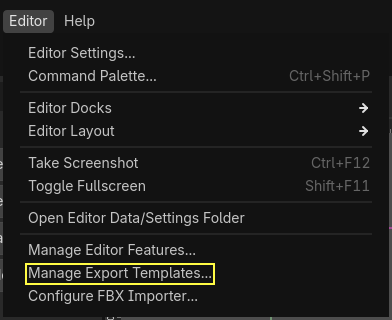

Tu juego en el mundo
Exportar a Windows y Android, organizar el proyecto, y presentar el proyecto final. La última pieza: que tu juego salga al mundo.
“Terminar un juego y poder compartirlo es lo más difícil — y hoy aprenden a hacerlo.”
Al terminar la clase van a poder…
- Exportar el proyecto como ejecutable para Windows y Android
- Organizar el proyecto con buenas prácticas de estructura
- Repasar los conceptos clave de toda la diplomatura
- Presentar el proyecto final y reflexionar sobre el camino
Ordenar el proyecto
res:// ├── assets/ │ ├── sprites/ │ ├── audio/ │ │ ├── music/ │ │ └── sfx/ │ └── fonts/ ├── scenes/ │ ├── personajes/ │ ├── niveles/ │ └── ui/ ├── scripts/ └── project.godot
Antes de exportar, verificar…
- Escena principal: Project Settings → Application → Run → Main Scene
- Ícono y nombre: Application → Config → Icon / Name
- Sin errores en rojo en la consola al jugar completo
- Rutas
res://: todas las referencias relativas, nunca absolutas
C:\Users\...) funciona en tu máquina pero se rompe al exportar o en otra compu. Siempre res://carpeta/archivo.png.Export Templates: el motor compilado
Son los archivos con el motor compilado para cada plataforma. Sin ellos no se puede exportar.
- Editor → Manage Export Templates → Download and Install
- Godot baja los compatibles con tu versión
💡 Pesan varios GB. Si la conexión es lenta, descargalos antes de la clase.

Exportar a Windows (.exe)
- Project → Export → Add… → Windows Desktop
- Elegir carpeta y nombre (
mi_juego.exe) - Export Mode: All Resources
- Clic en Export Project
mi_juego/ ├── mi_juego.exe # el ejecutable └── mi_juego.pck # los recursos # Sin el .pck, el .exe no funciona.

Configuraciones útiles de exportación
| Opción | Para qué sirve |
|---|---|
| Embed PCK | Fusiona .exe y .pck en un solo archivo. Más cómodo de distribuir, más lento de compilar. |
| Console Wrapper | Abre una consola al ejecutar. Útil para debug. Desactivar en la versión final. |
| Icon | Ícono del ejecutable. Recomendado: .ico con varios tamaños. |
.exe y el .pck juntos en un .zip.Exportar a Android (.apk): requisitos
Es más complejo (necesita herramientas extra), pero ver tu juego en el celular es muy motivador.
| Android SDK | Vía Android Studio → SDK Manager (SDK Platform + Build Tools) |
| JDK | Para firmar el APK. JDK 17 LTS desde adoptium.net |
| Configurar en Godot | Editor Settings → Export → Android → rutas de SDK y JDK |
Clave de debug y exportar
# Generar un keystore de debug (PowerShell):
keytool -genkey -v -keystore debug.keystore \
-storepass android -alias androiddebugkey \
-keypass android -keyalg RSA \
-keysize 2048 -validity 10000
Editor Settings → Export → Android → Debug Keystore → apuntar al archivo.
- Project → Export → Add → Android
- Unique Name:
com.tuestudio.juego - Export Path:
mi_juego.apk - Export Project
Testing y debugging
- Jugar de principio a fin al menos 3 veces
- Intentar romperlo: ir a lugares raros, hacer acciones inesperadas
- Que alguien que nunca lo jugó lo juegue — observar sin ayudar
- Verificar audio y resolución en el ejecutable
Resolución y modo de pantalla
# Project Settings → Display → Window: # - Viewport Width / Height: resolución base (ej: 1280 × 720) # - Stretch Mode: canvas_items (pixel art) o viewport (UI) # - Stretch Aspect: keep (mantiene proporción) # Por código, pantalla completa: DisplayServer.window_set_mode(DisplayServer.WINDOW_MODE_FULLSCREEN) # Volver a ventana: DisplayServer.window_set_mode(DisplayServer.WINDOW_MODE_WINDOWED)
Juegos comerciales hechos en Godot
🥔 Brotato
Roguelite arena, éxito enorme en Steam. Godot puro.
🐾 Cassette Beasts
RPG estilo monstruos, aclamado por crítica y jugadores.
⛏️ Dome Keeper
Minería + defensa, un indie hit hecho en Godot.
🔫 Buckshot Roulette
Fenómeno viral de terror psicológico.
⚔️ Halls of Torment
Survivor oscuro, top ventas en Steam.
🚀 …y el tuyo
Usan exactamente lo que vos aprendiste. La diferencia es escala, no fundamentos.
Todo lo que construyeron
| Clase 1 | Motor, interfaz de Godot, nodos y escenas |
| Clase 2 | GDScript: variables, condicionales, loops, funciones, input |
| Clase 3 | _ready(), _process(), delta, movimiento, Input Map |
| Clase 4 | CharacterBody2D, move_and_slide(), colisiones, señales |
| Clase 5 | POO, scripts como clases, instanciación, spawning |
| Clase 6 | CanvasLayer, Label, Button, ProgressBar, HUD, menús |
| Clase 7 | Animación, audio, Game Feel, Tween |
| Clase 8 | Exportación, organización, distribución |
Cómo presentar tu juego
1 · Demo jugable (5 min)
Mostrar el juego funcionando. Explicar el objetivo: ¿cómo se gana o pierde?
2 · Tour técnico (3 min)
Una parte del código que les resultó interesante o difícil. Qué herramienta de Godot usaron.
3 · Reflexión (2 min)
¿Qué fue lo más difícil? ¿Qué agregarían con más tiempo? ¿Qué aprendieron sin esperarlo?
Para seguir aprendiendo
🔗 Recursos
- Docs Godot — docs.godotengine.org
- GDQuest — gdquest.com
- KidsCanCode — kidscancode.org
- Game Jams — itch.io/jams, globalgamejam.org
- Comunidad — r/godot y el Discord oficial
💛 El mejor consejo
Hacer juegos pequeños y terminarlos. Un juego de 5 minutos que funciona vale más que un RPG enorme que nunca se termina.
“El único juego que no enseña nada es el que nunca se termina.”
¡Felicitaciones! Hicieron un juego. · Capturas del editor: docs oficiales de Godot — CC BY 4.0.